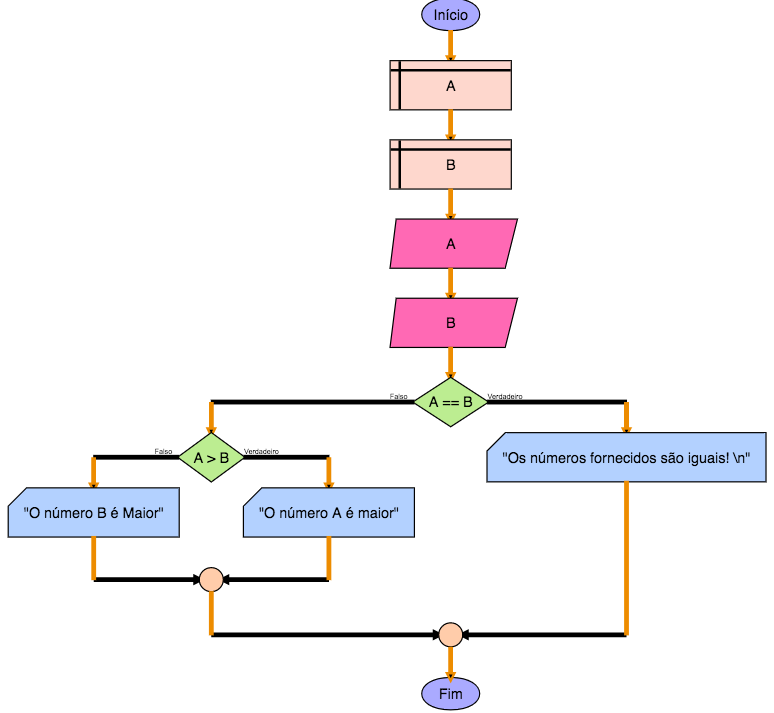

Este aloritmo foi implementado da seguinte forma:
-
Foram declaradas duas variáveis do tipo número A e B;
-
Aravés da instrução "Ler" é pedido ao utilizador que introduza o valor de A e B;
-
De seguida utilizamos a decisão com a instrução "Se/Não" para verificar se os valores são iguais;
-
Se forem iguais utilizamos a instrução "Escrever" para indicar ao utilizador que os números são iguais e termina o algoritmo;
-
Se não forem iguais perguntamos agora através da instrução "Se/Não" se "A" é maior que "B";
-
Consoante o resultado a indicação ao utilizador é dada por instruções "Escrever" e termina o algoritmo.

Carregar este algoritmo